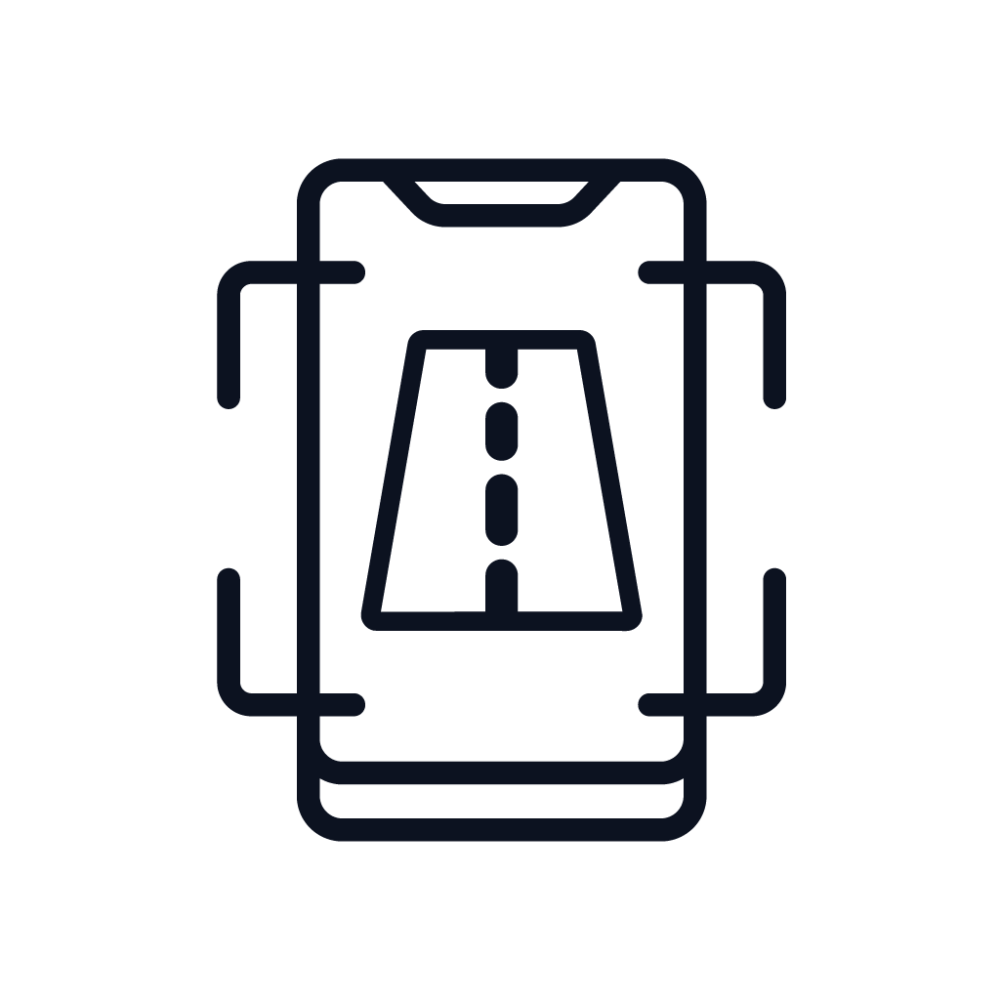

<ion-content [fullscreen]="true">
  <ion-header>
    <ion-toolbar>
      <ion-buttons>
        <ion-menu-button (click)="mandarEvento()" style="margin-left: 50px" color="medium" menu="first"></ion-menu-button>
      </ion-buttons>
      <ion-label color="medium" slot="end" style="margin-right: 90px; font-family: Titillium">POR UN CIELO SIN CONTAMINACION</ion-label>
    </ion-toolbar>
  </ion-header>
  <div class="gradiente">
<ion-grid>
  <ion-row style="margin-left: 75px;">
    <ion-col size="2" style="color: #f3f3f3; font-size: 20px"><p><b>Visita guiada</b></p></ion-col>
  </ion-row>
  <ion-row *ngIf="mostrarBotones" style="height: 340px; width: 100%; margin-top: -20px; margin-left: 27px">
    <ion-col class="videocol">
      <video #videoElement controls (pause)="mostrarIconos()" (playing)="esconderIconos()" style="height: 340px; width: 803px" >
        <source [src]="rutavideo" type="video/mp4">
        Tu navegador no implementa el elemento <code>video</code>.
      </video>
    </ion-col>
  </ion-row>
  <br>
  <ion-row *ngIf="mostrarBotones" style="background-color: #6F809C; border-top-right-radius: 25px; border-top-left-radius: 25px; margin-left: 60px;
  margin-right: 60px; ">
    <ion-col style="margin-left: 30px">
        <ion-fab-button *ngIf="opt=='visita'" color="visita" (click)="cambiarVideo('visita')" class="fabicons">
      
    </ion-fab-button>
        <ion-fab-button *ngIf="opt!='visita'" color="blanco" (click)="cambiarVideo('visita')" class="fabicons">
            
        </ion-fab-button>
        <br></ion-col>
    <ion-col>
        <ion-fab-button *ngIf="opt=='cesco'" color="cesco" (click)="cambiarVideo('cesco')" class="fabicons">
            
        </ion-fab-button>
        <ion-fab-button *ngIf="opt!='cesco'" color="blanco" (click)="cambiarVideo('cesco')" class="fabicons">
            
        </ion-fab-button>
        <br></ion-col>
    <ion-col>
        <ion-fab-button *ngIf="opt=='casleo'" color="casleo" (click)="cambiarVideo('casleo')" class="fabicons">
            
        </ion-fab-button>
        <ion-fab-button *ngIf="opt!='casleo'" color="blanco" (click)="cambiarVideo('casleo')" class="fabicons">
            
        </ion-fab-button>
        <br></ion-col>
    <ion-col>
        <ion-fab-button *ngIf="opt=='pampa'" color="pampa" (click)="cambiarVideo('pampa')" class="fabicons">
            
        </ion-fab-button>
        <ion-fab-button *ngIf="opt!='pampa'" color="blanco" (click)="cambiarVideo('pampa')" class="fabicons">
            
        </ion-fab-button>
        <br></ion-col>
    <ion-col>
        <ion-fab-button *ngIf="opt=='mineria'" color="mineria" (click)="cambiarVideo('mineria')" class="fabicons">
            
        </ion-fab-button>
        <ion-fab-button *ngIf="opt!='mineria'" color="blanco" (click)="cambiarVideo('mineria')" class="fabicons">
            
        </ion-fab-button>
        <br></ion-col>
    <ion-col size="1.5" class="ion-align-items-center">
        <ion-fab-button *ngIf="opt=='pachon'" color="pachon" (click)="cambiarVideo('pachon')" class="fabicons">
            
        </ion-fab-button>
        <ion-fab-button *ngIf="opt!='pachon'" color="blanco" (click)="cambiarVideo('pachon')" class="fabicons">
            
        </ion-fab-button>
        <br></ion-col>
  </ion-row>

<!--    Video siendo reproducido-->

    <ion-row *ngIf="!mostrarBotones" style="height: 400px; width: 100%; margin-top: -20px; margin-left: 27px">
        <ion-col class="videocol">
            <video #videoElement controls (pause)="mostrarIconos()" (playing)="esconderIconos()" style="height: 400px; width: 803px" >
                <source [src]="rutavideo" type="video/mp4">
                Tu navegador no implementa el elemento <code>video</code>.
            </video>
        </ion-col>
    </ion-row>
    <br>
    <ion-row *ngIf="!mostrarBotones" style="background-color: #6F809C; border-top-right-radius: 25px; border-top-left-radius: 25px; margin-left: 60px;
  margin-right: 60px; height: 30px!important; "></ion-row>

<!--  <ion-row>-->
<!--    <ion-col class="labelcol"><ion-label>Visita Guiada</ion-label></ion-col>-->
<!--    <ion-col class="labelcol"><ion-label>Conocé el CESCO</ion-label></ion-col>-->
<!--    <ion-col class="labelcol"><ion-label>Conocé el CASLEO</ion-label></ion-col>-->
<!--    <ion-col class="labelcol"><ion-label>Parque Nacional El Leoncito</ion-label></ion-col>-->
<!--    <ion-col class="labelcol"><ion-label>Minería en San Juan</ion-label></ion-col>-->
<!--    <ion-col class="labelcol"><ion-label>El Pachón</ion-label></ion-col>-->
<!--  </ion-row>-->
</ion-grid></div>
</ion-content>
